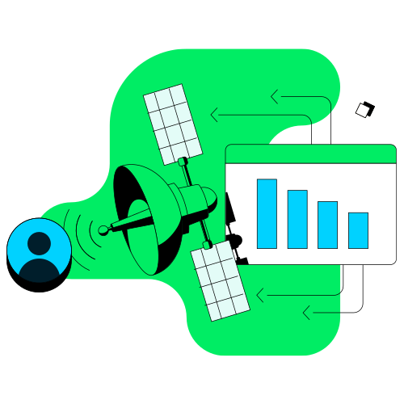

Soluções MongoDB
Casos de Uso
Inteligência Artificial
MongoDB é ideal para projetos de Inteligência Artificial (IA) devido à sua flexibilidade em lidar com grandes volumes de dados não estruturados e semi-estruturados. Ele suporta a integração com ferramentas de machine learning e análise de dados, permitindo armazenar e processar grandes conjuntos de dados necessários para treinar modelos de IA. A capacidade de escalar horizontalmente ajuda a gerenciar a crescente demanda por dados e processamento.
Computação de Borda
Na computação de borda, MongoDB é utilizado para coletar e processar dados próximos à fonte de geração, como dispositivos IoT e sensores. A natureza distribuída e escalável do MongoDB permite o armazenamento e análise de dados em tempo real, reduzindo a latência e melhorando a eficiência operacional. A sincronização com o banco de dados centralizado é facilitada por seus mecanismos de replicação e sharding.
Internet das Coisas (IoT)
Para soluções de IoT, MongoDB é uma escolha popular devido à sua capacidade de lidar com grandes volumes de dados gerados por dispositivos conectados. A estrutura de dados flexível do MongoDB é adequada para armazenar diferentes tipos de dados de sensores e dispositivos, enquanto suas funcionalidades de consulta e agregação permitem analisar esses dados para insights operacionais.

Mobile
MongoDB oferece suporte robusto para aplicativos móveis, permitindo o armazenamento e sincronização de dados entre o cliente e o servidor de forma eficiente. Sua escalabilidade e flexibilidade são vantajosas para aplicativos que precisam lidar com dados de usuários e interações em tempo real. A integração com plataformas de backend como Realm facilita o desenvolvimento de soluções móveis com sincronização de dados offline e online.
Pagamentos
No setor de pagamentos, MongoDB é utilizado para gerenciar grandes volumes de transações e dados relacionados a pagamentos. Sua capacidade de escalar e lidar com dados não estruturados permite o gerenciamento eficiente de informações financeiras, enquanto a segurança e a conformidade são garantidas por suas funcionalidades de criptografia e controle de acesso.

Desenvolvimento Serverless
MongoDB se adapta bem a arquiteturas serverless, oferecendo uma solução de banco de dados que pode ser facilmente integrada com funções serverless e serviços de backend. Sua escalabilidade automática e o gerenciamento de dados sem a necessidade de administração de servidores físicos permitem uma abordagem mais ágil e econômica para o desenvolvimento de aplicativos serverless.

Indústrias
Serviços Financeiros
Na indústria financeira, MongoDB é utilizado para gerenciar dados transacionais e históricos com alta disponibilidade e escalabilidade. A flexibilidade do banco de dados facilita a adaptação às mudanças regulatórias e requisitos de conformidade, enquanto suas capacidades de análise em tempo real ajudam a detectar fraudes e gerar insights financeiros.
Telecomunicações
Para o setor de telecomunicações, MongoDB oferece soluções para gerenciar dados de redes, clientes e serviços. Sua capacidade de escalar horizontalmente e lidar com grandes volumes de dados é crucial para suportar operações e análise de dados em tempo real, otimizando o gerenciamento de redes e a experiência do cliente.
Saúde
No setor de saúde, MongoDB é utilizado para armazenar e analisar dados de pacientes, registros médicos e resultados de testes. Sua flexibilidade para lidar com dados não estruturados e a capacidade de realizar consultas complexas são importantes para melhorar o atendimento ao paciente e a pesquisa médica. A segurança e a conformidade são suportadas por recursos de criptografia e controle de acesso.
Varejo
Para o varejo, MongoDB ajuda a gerenciar dados de clientes, inventário e transações. A capacidade de personalizar a experiência do cliente e otimizar a gestão de inventário são facilitadas pelas funcionalidades de agregação e análise do MongoDB. A escalabilidade permite lidar com picos de demanda durante eventos de vendas e campanhas promocionais.
Setor Público
No setor público, MongoDB é utilizado para gerenciar dados relacionados a serviços e operações governamentais. A flexibilidade e escalabilidade do banco de dados ajudam a gerenciar grandes volumes de dados e fornecer serviços mais eficientes para os cidadãos. As capacidades de análise e visualização suportam a tomada de decisões baseadas em dados. 
Fabricação
Na indústria de manufatura, MongoDB é utilizado para monitorar e otimizar operações de produção, gerenciar dados de equipamentos e analisar desempenho. A capacidade de lidar com dados de sensores e equipamentos em tempo real permite uma manutenção preditiva e um melhor gerenciamento da cadeia de suprimentos.

Exemplos
Estudos de Caso com MongoDB
eBay
- Desafio: eBay precisava de uma solução escalável para lidar com grandes volumes de dados e tráfego intenso.
- Solução: Implementou o MongoDB para armazenar e processar dados de eventos e logs em tempo real.
- Resultado: Melhor desempenho nas operações de busca e análise, escalabilidade para lidar com o crescimento do tráfego e capacidade de processar grandes volumes de dados com alta eficiência.
Adobe
- Desafio: Adobe precisava de uma plataforma que suportasse grandes volumes de dados não estruturados e permitisse análises rápidas.
- Solução: Utilizou o MongoDB para gerenciar e analisar dados de comportamento do usuário e feedback em tempo real.
- Resultado: Melhorou a capacidade de personalização e análise de dados em tempo real, resultando em uma experiência mais personalizada para os usuários e insights valiosos sobre o comportamento do cliente.
Forbes
- Desafio: Forbes buscava uma solução para lidar com a carga de trabalho crescente e melhorar a performance de seu sistema de gerenciamento de conteúdo.
- Solução: Adotou o MongoDB para gerenciar o conteúdo digital e os dados relacionados aos artigos e interações dos leitores.
- Resultado: Aumentou a eficiência e a agilidade na entrega de conteúdo, melhorou a escalabilidade e o desempenho geral do sistema.
Netflix
- Desafio: Netflix precisava de uma solução que suportasse a análise de grandes volumes de dados de streaming e oferecesse alta disponibilidade.
- Solução: Utilizou o MongoDB para armazenar e analisar dados de visualização e recomendação em tempo real.
- Resultado: Melhorou a personalização das recomendações e a capacidade de processar dados em tempo real, proporcionando uma experiência de usuário mais envolvente e personalizada.
T-Mobile
- Desafio: T-Mobile precisava de uma solução para gerenciar e analisar dados de clientes e operações em tempo real.
- Solução: Implementou o MongoDB para lidar com dados de cliente, histórico de chamadas e informações de rede.
- Resultado: Facilitou a análise e gestão de dados complexos, melhorou a eficiência operacional e ajudou na personalização das ofertas para clientes.